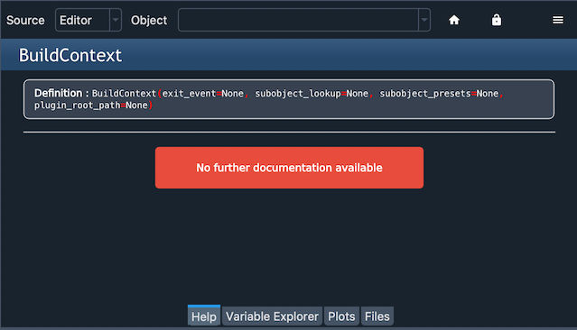
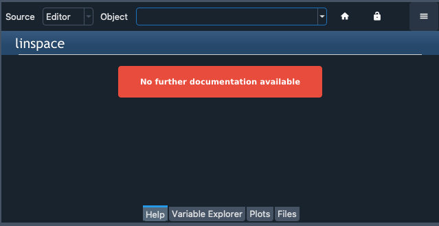
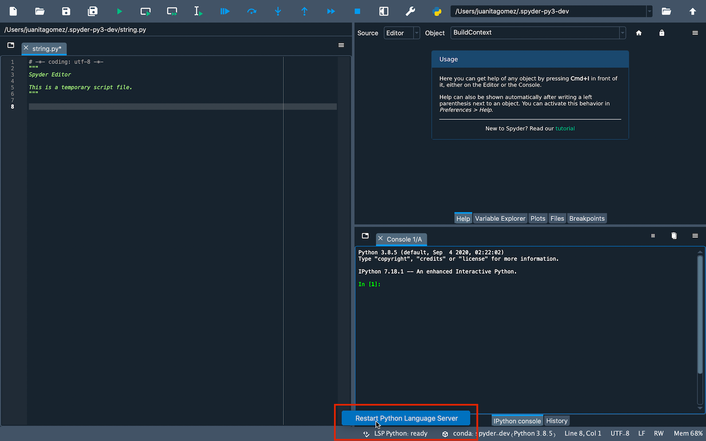
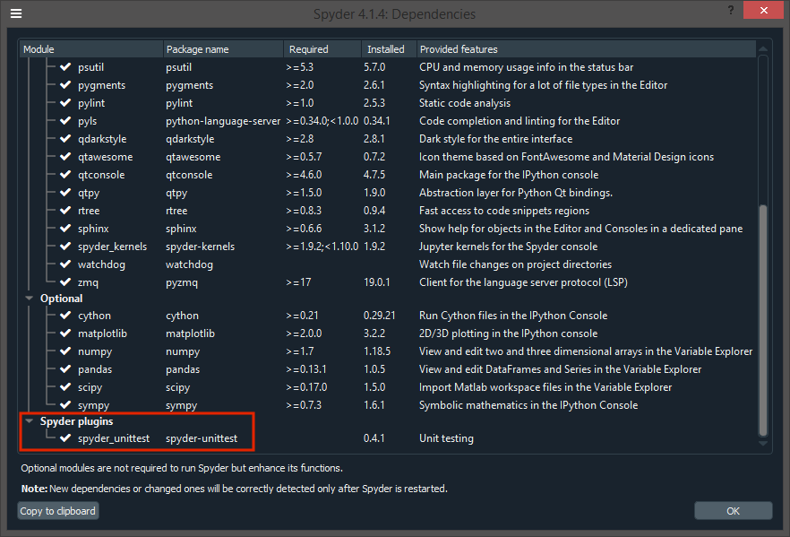

Common Illnesses#
Beyond the general troubleshooting steps, some frequently-reported problems require more specialized solutions.
Errors starting the kernel#
If you receive the message An error occurred while starting the kernel in the IPython Console, Spyder was unable to launch a new Python interpreter in the current working environment to run your code.
There are a number of problems that can cause this, but most can be fixed fairly quickly with a few easy steps.
Spyder-Kernels not installed/incompatible#
Spyder requires a supported version of the spyder-kernels package to be present in the working environment you want to run your console in.

It is included by default with Anaconda, but if you want to run your code in another Python environment or installation, you’ll need to make sure it’s installed and updated to the latest version.
Check the required version of spyder-kernels for your version of Spyder in the following table:
Spyder |
Spyder-Kernels |
|---|---|
4.0.0-4.0.1 |
1.8.1 |
4.1.0-4.1.2 |
1.9.0 |
4.1.3 |
1.9.1 |
4.1.4 |
1.9.3 |
4.1.5-4.1.6 |
1.9.4 |
4.2.0 |
1.10.0 |
5.0.0-5.0.5 |
2.0.5 |
5.1.0-5.1.5 |
2.1.3 |
5.2.0-5.2.1 |
2.2.0 |
5.2.2 |
2.2.1 |
5.3.0-5.3.3 |
2.3.3 |
5.4.0-5.4.3 |
2.4.3 |
To do so, activate the environment, then install spyder-kernels.
If using Anaconda, open a terminal (Anaconda Prompt on Windows) and run:
conda activate ENVIRONEMENT-NAME
conda install spyder-kernels=<VERSION>
Otherwise, activate your environment by whatever means you created it, and execute:
pip install spyder-kernels==<VERSION>
For both of the previous commands, replace <VERSION> with the corresponding version in the table.
Issue with another dependency#
If the kernel displays a long error traceback that mentions other packages like ipython, ipykernel, jupyter_client, traitlets or pyzmq, the problem may be an out of date or incompatible version of a dependency package.
To fix this, activate the environment and update the key dependencies.
In an Anaconda environment:
conda activate ENVIRONMENT-NAME
conda update spyder-kernels ipython ipykernel jupyter_client jupyter_core pyzmq traitlets
Otherwise, activate your environment by whatever means you created it, and run:
pip install -U spyder-kernels ipython ipykernel jupyter_client jupyter_core pyzmq traitlets
AttributeError/ImportError#
Check the last few lines of the error message, and see if its an AttributeError or ImportError, or refers to a file you created in your current working directory or your home folder (C:/Users/YOUR_USERNAME on Windows, /Users/YOUR_USERNAME on macOS, or /home/YOUR_USERNAME on Linux).
If so, the the error is likely due to your file being named the same as a Python standard library module, such as string.py or time.py, which overrides the built-in module that Spyder-Kernels is trying to load.
To fix this, simply rename your file to something other than one of these names, and try restarting the kernel.
To check the names of these modules, see the list in the Python standard library documentation.
Completion/help not working#
To provide code completions, help and real-time analysis in the Editor, Spyder uses the Python Language Server (PyLS), an implementation of the Language Server Protocol specification used by VSCode, Atom and other popular editors/IDEs. Most help and completion issues lie outside of Spyder’s control, and are either limitations with PyLS or the code that is being introspected, but some can be worked around.
Object missing docstring#
If nothing is displayed in the calltip, hover hint or help pane, the object you’re trying to introspect may not have a docstring.
{kind=link}
In this case, the only solution is to add one in the source code of the original function, method or class.
Object cannot be found#
Some objects, whether due to being written in C, Cython or another language; generated dynamically at runtime; or being a method of an object you create, cannot be easily found without executing the code.
{kind=link}
However, once you run your code in the IPython Console, you might be able to get help and completions on the object there.
LSP has stopped working#
Occasionally, especially after using Spyder for a while, code completion, help and analysis may stop working. If this is the case, you can check LSP status with the LSP Python item in Spyder’s status bar at the bottom of the screen, and restart it by right-clicking it and selecting the Restart Python Language Server item.
Spyder bug/dependency issue#
Given the variety of dependencies involved in making LSP work, an incompatible or out of date version in your environment can result in error messages, incomplete results, or help/analysis not working at all.
To address this, first try updating Anaconda and Spyder as described in Basic First Aid. If the issue still isn’t resolved, update the various relevant dependencies with:
conda update python-language-server
Plugin Problems#
Plugin does not work at all#
If you have installed a Spyder plugin, but you can’t see it, go to the Panes submenu of the View menu and select the plugin’s name, which should make its pane visible. If you don’t see the plugin there, select the Dependencies item under the Help menu and see if the plugin appears at the bottom.
If the plugin with the problem is not listed in the dependencies dialog, check that you installed it in the same environment as Spyder.
If you have, then the problem may well be caused by a dependency issue.
Test whether you can import the plug-in manually by opening a Python console in the same environment as Spyder and typing, for instance, import spyder_unittest to test the Spyder-Unittest` plug-in; this command should run without errors.
If none of this helps you to resolve the problem, then continue to the next section.
Other issues#
If you get an error which mentions or involves a Spyder plugin, such as spyder-unittest, spyder-terminal or spyder-notebook, or if you encounter any other problem with a Spyder plugin, then the first approach should be to update Spyder and the plugin to their latest versions.
If this doesn’t fix the problem, you should check the plugin’s website or repository to see if it is compatible with your version of Spyder.
Finally, if compatibility doesn’t seem to be the problem, please check those repositories to see if an issue was already opened, and report it there if not.